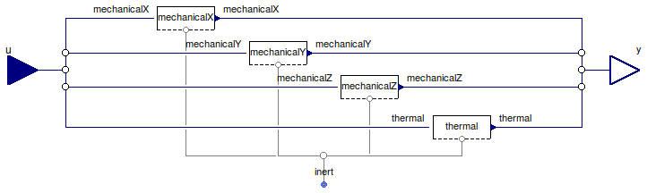

Table of Contents
- User's Guide
- Blocks
- Conditions
- Assemblies
- Regions
- Subregions
- Connectors
- Characteristics
- Units
- Quantities
- BaseClasses
Download
- Latest: FCSys-2.0.zip (**Please check back soon or contact kdavies4 at gmail.com.)

| Name | Description |
|---|---|
| Species | Condition for a Inert or InertInternal connector (e.g., as in a Species model), with efforts by default |
| SpeciesFlow | Condition for a Inert or InertInternal connector (e.g., as in a Species model), with efforts by default |
| Translational conditions | |
| Thermal conditions | |
| Base classes (not generally for direct use) |

If the source of an internal specification is redeclared to a block besides
Modelica.Blocks.Sources.Constant,
then the related condition must be redeclared as well. For example, use:
redeclare Conditions.Inert.Translational.Force translationalX(redeclare Modelica.Blocks.Sources.Ramp source)
rather than simply:
translationalX(redeclare Modelica.Blocks.Sources.Ramp source)
Extends from FCSys.Conditions.BaseClasses.Icons.Single (Icon for a single-connector boundary condition).
| Type | Name | Default | Description |
|---|---|---|---|
| Axes with translational momentum included | |||
| Boolean | inclTransX | true | X |
| Boolean | inclTransY | false | Y |
| Boolean | inclTransZ | false | Z |
| Included subconnectors | |||
| Boolean | inclTranslational | true | Translational |
| Boolean | inclThermal | true | Thermal |
| Conditions | |||
| Velocity | translationalX | redeclare Translational.Velo… | X-axis translational |
| Velocity | translationalY | redeclare Translational.Velo… | Y-axis translational |
| Velocity | translationalZ | redeclare Translational.Velo… | Z-axis translational |
| Temperature | thermal | redeclare Thermal.Temperatur… | Thermal |
| Type | Name | Description |
|---|---|---|
| RealInputBus | u | Input bus for values of specified conditions |
| RealOutputBus | y | Output bus of measurements |
| InertInternal | inert | Single-species connector for translational momentum and heat |
model Species "Condition for a Inert or InertInternal connector (e.g., as in a Species model), with efforts by default" import FCSys.BaseClasses.Utilities.countTrue; extends FCSys.Conditions.BaseClasses.Icons.Single; // Included components of translational momentum parameter Boolean inclTransX=true "X"; parameter Boolean inclTransY=false "Y"; parameter Boolean inclTransZ=false "Z"; // Included subconnectors parameter Boolean inclTranslational=true "Translational"; parameter Boolean inclThermal=true "Thermal"; // Conditions replaceable Translational.Velocity translationalX(source(k(start=0))) if inclTransX constrainedby Translational.BaseClasses.PartialCondition( final inclTransX=inclTransX, final inclTransY=inclTransY, final inclTransZ=inclTransZ, final axis=Axis.x) "X-axis translational"; replaceable Translational.Velocity translationalY(source(k(start=0))) if inclTransY constrainedby Translational.BaseClasses.PartialCondition( final inclTransX=inclTransX, final inclTransY=inclTransY, final inclTransZ=inclTransZ, final axis=Axis.y) "Y-axis translational"; replaceable Translational.Velocity translationalZ(source(k(start=0))) if inclTransZ constrainedby Translational.BaseClasses.PartialCondition( final inclTransX=inclTransX, final inclTransY=inclTransY, final inclTransZ=inclTransZ, final axis=Axis.z) "Z-axis translational"; replaceable Thermal.Temperature thermal(source(k(start=298.15*U.K))) constrainedby Thermal.BaseClasses.PartialCondition( final inclTransX=inclTransX, final inclTransY=inclTransY, final inclTransZ=inclTransZ) "Thermal"; Connectors.RealInputBus u "Input bus for values of specified conditions"; Connectors.RealOutputBus y "Output bus of measurements"; Connectors.InertInternal inert( final n_trans=countTrue({inclTransX,inclTransY,inclTransZ}), inclTranslational=inclTranslational, inclThermal=inclThermal) "Single-species connector for translational momentum and heat"; equation // X-axis translational connect(translationalX.translational, inert.translational); connect(u.translationalX, translationalX.u); connect(translationalX.y, y.translationalX); // Y-axis translational connect(translationalY.translational, inert.translational); connect(u.translationalY, translationalY.u); connect(translationalY.y, y.translationalY); // Z-axis translational connect(translationalZ.translational, inert.translational); connect(u.translationalZ, translationalZ.u); connect(translationalZ.y, y.translationalZ); // Thermal connect(thermal.thermal, inert.thermal); connect(u.thermal, thermal.u); connect(thermal.y, y.thermal); end Species;
See the Species model.
Extends from Species (Condition for a Inert or InertInternal connector (e.g., as in a Species model), with efforts by default).
| Type | Name | Default | Description |
|---|---|---|---|
| Axes with translational momentum included | |||
| Boolean | inclTransX | true | X |
| Boolean | inclTransY | false | Y |
| Boolean | inclTransZ | false | Z |
| Included subconnectors | |||
| Boolean | inclTranslational | true | Translational |
| Boolean | inclThermal | true | Thermal |
| Type | Name | Description |
|---|---|---|
| RealInputBus | u | Input bus for values of specified conditions |
| RealOutputBus | y | Output bus of measurements |
| InertInternal | inert | Single-species connector for translational momentum and heat |
model SpeciesFlow "Condition for a Inert or InertInternal connector (e.g., as in a Species model), with efforts by default" extends Species( redeclare Translational.Force translationalX(source(k(start=0))), redeclare Translational.Force translationalY(source(k(start=0))), redeclare Translational.Force translationalZ(source(k(start=0))), redeclare Thermal.HeatRate thermal(source(k(start=0)))); end SpeciesFlow;